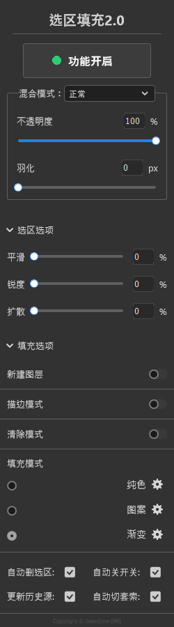
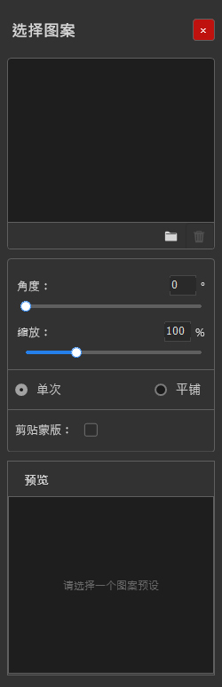
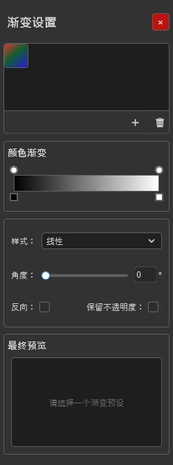
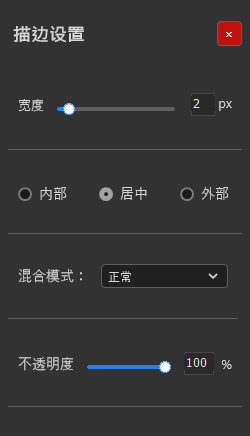
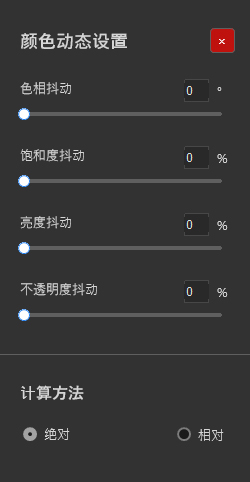

选区填充 使用说明
当 Photoshop 生成「新选区」时，自动按你设定的模式（纯色 / 图案 / 渐变 / 清除）填充或删除选区内容；并提供主开关、混合模式、羽化、选区改造、描边与颜色抖动等全套控制。
1. 面板概览
选区填充是 JWautofill 的主面板（标题显示为「选区填充2.0」）。它的核心逻辑是：只在生成「新选区」的瞬间触发自动填充——加选、减选、交叉选区不会触发，避免重复填充。
面板从上到下包含
- 主开关：大按钮「功能开启 / 功能关闭」，带状态指示灯。
- 混合模式：与 Photoshop 图层混合模式一致（默认「正常」）。
- 不透明度 / 羽化：两个滑杆，控制填充强度与边缘柔和度。
- 选区选项（折叠区）：平滑、锐度、扩散。
- 填充选项（折叠区）：新建图层、描边模式、清除模式、填充模式（纯色 / 图案 / 渐变），以及若干自动行为开关。
- 子面板：选中对应填充模式后展开「颜色动态设置 / 选择图案 / 渐变设置 / 描边设置」。

2. 主开关与快捷键
顶部的主开关决定自动填充是否生效。点击按钮在「功能开启 / 功能关闭」之间切换，左侧指示灯同步显示状态。开关状态会跨面板持久化并共享。
联动行为
| 选项 | 作用 |
|---|---|
| 自动切套索 | 主开关由「关 → 开」时，自动切换到套索工具，便于立刻框选。 |
| 自动关开关 | 主开关开启时，若切到画笔 / 铅笔 / 橡皮 / 混合器 / 油漆桶 / 渐变 / 移动 / 涂抹等工具，自动关闭主开关。 |
主开关快捷键（Ctrl+Q）
默认组合键为 Ctrl+Q，由本地的「快捷键服务」通过 Windows 全局键盘钩子捕获，翻转跨面板共享状态——两个面板显示始终一致。
- 该条目在配置中长期存在：组合键为空表示你已解绑（不会自动补回默认）；配置里完全没有该条目才视为首次使用、写入默认
Ctrl+Q。 - 重新设置：右上角菜单「设置选区填充主开关快捷键」→ 按提示 → 由快捷键服务录制 → 写回配置。
- 若快捷键服务未连接，会提示先到绘画工具箱面板的「笔刷热键」启动它。
3. 填充模式
在「填充选项」里选择填充模式，并点对应设置图标打开子面板。三种模式互斥，下方选项随模式变化。
3.1 纯色
监测到新选区即填充前景色。点设置图标打开「颜色动态设置」，可对每次填充做随机颜色变化（见第 6 节）。
3.2 图案
用本地 jpg / png 作为图案预设（不支持 Photoshop 内部图案）。点设置图标打开「选择图案」。
| 参数 | 说明 |
|---|---|
| 缩放 | 图案缩放百分比。 |
| 单次 / 平铺 | 填充方案：单次铺一张，或平铺重复。 |
| 旋转阵列 | 「全部旋转」默认勾选 + 角度；可让图案按角度阵列排布。 |
| 预览 | 带预览缩放（默认 100%）。 |
- 「选择图案文件」从系统载入 jpg/png 作为预设；预设支持 Shift / Ctrl 多选、拖拽排序、删除。
- 图案填充支持 PNG 不透明度通道（保留透明度）。

3.3 渐变
用户自设起止色 / 角度 / 滑块；当前仅支持线性与径向。点设置图标打开「渐变设置」。
| 参数 | 说明 |
|---|---|
| 渐变预设 | 命名「渐变预设 N」，支持增 / 删 / 拖拽排序、Shift/Ctrl 多选；空选区提示「请选择一个渐变预设」。 |
| 颜色 / 不透明度滑块 | 渐变条上加滑块，颜色滑块（# 十六进制）与不透明度滑块一一对应。 |
| 样式 | 线性 / 径向。 |
| 角度 | 角度值（径向模式下禁用但仍占位）。 |
| 反向 / 保留不透明度 | 两个开关。 |

3.4 清除模式
以下方所选模式「删除」选区内容（与「新建图层」互斥）。采用绝对计算：白 = 100% 删除，黑 = 不删除。
4. 选区与填充选项
选区选项（平滑 / 锐度 / 扩散，0–100%）
| 参数 | 说明 |
|---|---|
| 平滑 | 挪用「选择并遮住」的平滑，减锯齿与起伏（设 0 不修改选区）。 |
| 锐度 | 锐化选区边缘。 |
| 扩散 | 以喷溅方式向外扩张选区。 |
填充选项开关
| 开关 | 作用 |
|---|---|
| 新建图层 | 每次填充前新建图层（与清除模式互斥；快速蒙版 / 新建图层下禁用）。 |
| 描边模式 | 填充后自动给选区边缘加描边，开启后显示描边颜色预览块与「描边设置」。 |
| 清除模式 | 见 3.4。 |
底部自动行为（复选框）
- 自动删选区：填充后取消选区。
- 更新历史源：把历史记录画笔源设为生成选区那一刻（即「颜色历史」来源）。
- 自动关开关：见第 2 节。
- 自动切套索：见第 2 节。
5. 描边设置
开启「描边模式」后，填充会顺带给选区边缘描边。点「描边设置」图标打开子面板：
| 参数 | 说明 |
|---|---|
| 宽度 | 0–20px。 |
| 位置 | 内部 / 居中 / 外部。 |
| 混合模式 | 下拉（清除模式下隐藏）。 |
| 不透明度 | 0–100%。 |

6. 颜色动态设置
纯色模式下打开，对每次填充做 RGB / 不透明度抖动，实现随机色彩变化。
| 参数 | 范围 / 说明 |
|---|---|
| 色相抖动 | 0–360°（普通通道）。 |
| 饱和度抖动 | 0–100%（普通通道）。 |
| 亮度抖动 | 0–100%（普通通道）。 |
| 灰度抖动 | 0–100%（清除 / 快速蒙版 / 图层蒙版 / 单通道时显示此项）。 |
| 不透明度抖动 | 0–100%（始终显示）。 |
| 计算方法 | 绝对 / 相对（单选）。 |

8. 常见问题
为什么开启主开关后没有自动填充？
请确认 Photoshop 工具栏的「羽化」为 0；且只在生成「新选区」时触发，加选 / 减选 / 交叉不会触发。
填充提示「请先选择一个图案预设 / 渐变预设」？
在对应的「选择图案 / 渐变设置」子面板里先选或新建一个预设再填充。
快捷键（Ctrl+Q）没反应？
说明「快捷键服务」未运行，请到绘画工具箱面板的「笔刷热键」启动它，再回主面板设置主开关快捷键。